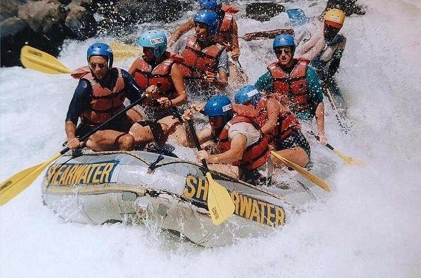
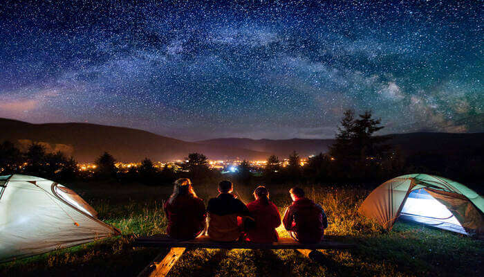
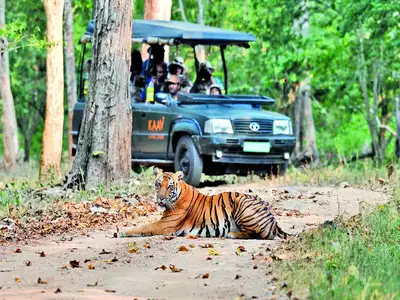
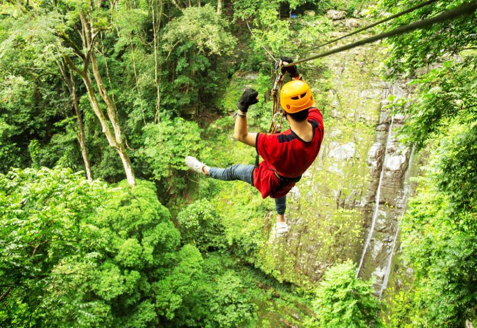
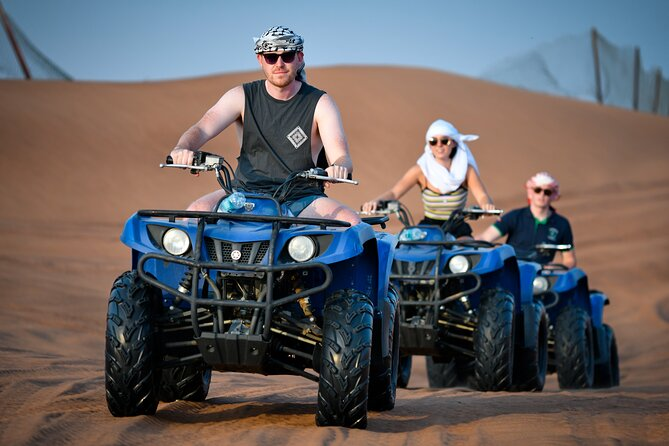
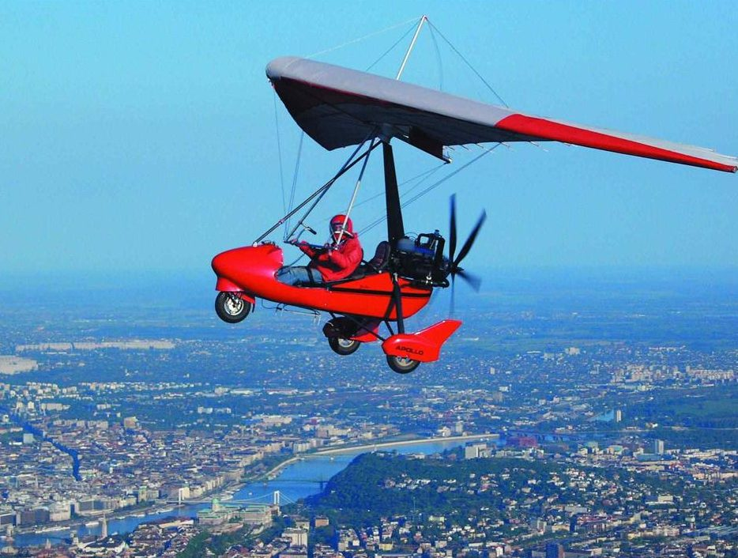
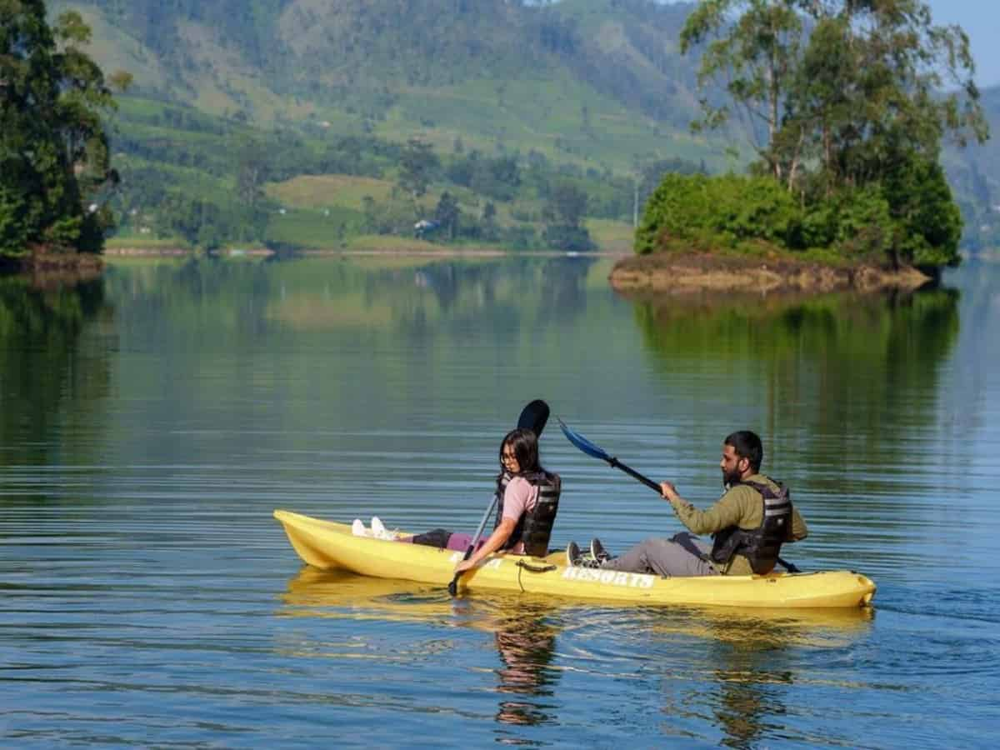
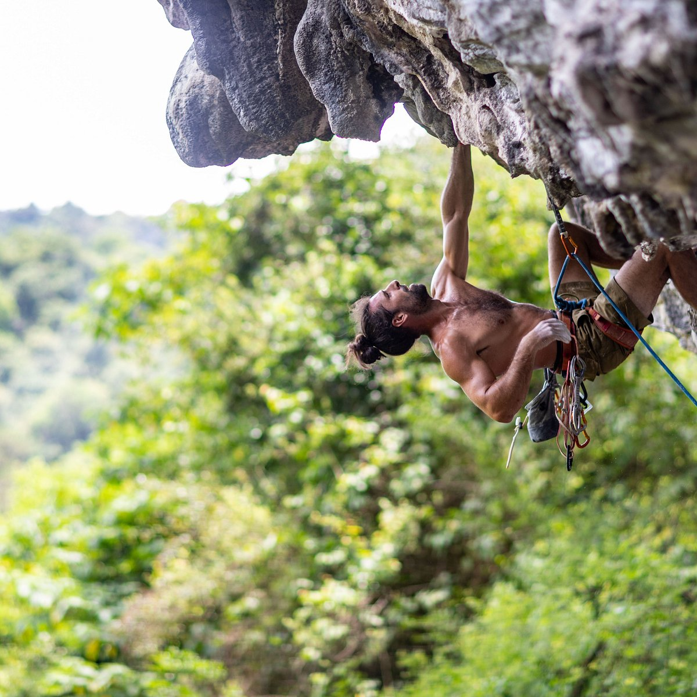

Adventure Sports in Coorg

Trekking
Trekking is a popular outdoor activity that involves long, challenging walks or hikes through natural landscapes such as mountains, forests, or wilderness areas.
It is a great way to explore and appreciate the beauty of nature while challenging oneself physically and mentally.
Trekking is not just about reaching a specific destination; it's also about enjoying the journey itself. Take time to appreciate the natural surroundings, observe wildlife,
and soak in the tranquility of the wilderness. Stay present, take breaks when needed, and connect with nature.
Safety should always be a priority during trekking. Inform someone about your trekking plans and expected return time. Stick to marked trails and avoid venturing off into unknown
or dangerous areas. Be mindful of weather conditions and be prepared to adjust your plans accordingly. It's also advisable to trek with a group or at least one companion, especially in remote areas.
River Rafting

Coorg is not particularly famous for river rafting, there are a few places nearby where you can enjoy this thrilling water sport. Here are a couple of options for river rafting near Coorg.
Barapole River: Located in the Brahmagiri Wildlife Sanctuary, the Barapole River is a popular destination for white water rafting in the region. It is approximately a 2 to 3-hour drive from Coorg. The river offers different grades of rapids, ranging from easy to challenging, making it suitable for both beginners and experienced rafters. The rafting season generally runs from June to September when the water levels are high. During this time, you can enjoy the adrenaline rush while navigating through the rapids of the river.
Dubare River: The Dubare River, located near Kushalnagar in Coorg, is another option for river rafting. While the rapids here may not be as intense as those in Barapole, it still provides an enjoyable rafting experience amidst serene surroundings. The rafting stretch is relatively shorter, and the activity is usually available throughout the year, depending on the water levels.
Barapole River: Located in the Brahmagiri Wildlife Sanctuary, the Barapole River is a popular destination for white water rafting in the region. It is approximately a 2 to 3-hour drive from Coorg. The river offers different grades of rapids, ranging from easy to challenging, making it suitable for both beginners and experienced rafters. The rafting season generally runs from June to September when the water levels are high. During this time, you can enjoy the adrenaline rush while navigating through the rapids of the river.
Dubare River: The Dubare River, located near Kushalnagar in Coorg, is another option for river rafting. While the rapids here may not be as intense as those in Barapole, it still provides an enjoyable rafting experience amidst serene surroundings. The rafting stretch is relatively shorter, and the activity is usually available throughout the year, depending on the water levels.
Camping

Camping in Coorg, also known as Kodagu, can be a fantastic way to immerse yourself in the natural beauty of the region and experience the tranquility of its surroundings. Coorg offers
various camping options, including camping in private estates, camping by rivers or waterfalls, and camping in designated camping sites. Here's some information to help you plan your camping experience in Coorg.
Private Estates: Many coffee and spice estates in Coorg offer camping facilities within their premises. These estates provide a serene and secluded environment where you can pitch your tent or stay in pre-arranged tents or cottages. You can enjoy the serene ambiance, explore the estate, and even learn about coffee or spice cultivation.
Riverside Camping: Coorg is home to several rivers and streams, providing excellent opportunities for riverside camping. You can set up your camp near the riverside, enjoy the soothing sound of flowing water, and engage in activities like fishing or swimming. It's advisable to choose camping spots with proper permissions and ensure that you leave no trace of your visit.
Private Estates: Many coffee and spice estates in Coorg offer camping facilities within their premises. These estates provide a serene and secluded environment where you can pitch your tent or stay in pre-arranged tents or cottages. You can enjoy the serene ambiance, explore the estate, and even learn about coffee or spice cultivation.
Riverside Camping: Coorg is home to several rivers and streams, providing excellent opportunities for riverside camping. You can set up your camp near the riverside, enjoy the soothing sound of flowing water, and engage in activities like fishing or swimming. It's advisable to choose camping spots with proper permissions and ensure that you leave no trace of your visit.
Jeep Safari

Kodagu, is a region in the southwestern part of Karnataka, India, known for its lush green landscapes, coffee plantations, and biodiversity. While Coorg does not have traditional safaris like those found in national
parks or wildlife reserves, there are opportunities to explore and witness wildlife in the region. Here are a few ways to experience a safari-like encounter in Coorg.
Nagarhole National Park: Located approximately 70 kilometers from Coorg, Nagarhole National Park is a popular wildlife sanctuary known for its rich flora and fauna. It is home to various animals, including elephants, tigers, leopards, Indian bison, deer, and a wide variety of bird species. You can embark on a wildlife safari within the park, either in a jeep or on an elephant, accompanied by experienced guides. The safari allows you to get close to nature and observe wildlife in their natural habitat.
Brahmagiri Wildlife Sanctuary: Situated on the border of Karnataka and Kerala, the Brahmagiri Wildlife Sanctuary is another option for wildlife enthusiasts. Though relatively smaller in size, it offers a chance to spot diverse wildlife, such as elephants, deer, langurs, and numerous bird species. You can explore the sanctuary through trekking trails and enjoy the beauty of the forested landscapes.
Nagarhole National Park: Located approximately 70 kilometers from Coorg, Nagarhole National Park is a popular wildlife sanctuary known for its rich flora and fauna. It is home to various animals, including elephants, tigers, leopards, Indian bison, deer, and a wide variety of bird species. You can embark on a wildlife safari within the park, either in a jeep or on an elephant, accompanied by experienced guides. The safari allows you to get close to nature and observe wildlife in their natural habitat.
Brahmagiri Wildlife Sanctuary: Situated on the border of Karnataka and Kerala, the Brahmagiri Wildlife Sanctuary is another option for wildlife enthusiasts. Though relatively smaller in size, it offers a chance to spot diverse wildlife, such as elephants, deer, langurs, and numerous bird species. You can explore the sanctuary through trekking trails and enjoy the beauty of the forested landscapes.
Ziplining

Ziplining, also known as a flying fox or canopy tour, is an exciting adventure activity that involves gliding through the air on a suspended cable while harnessed. While Coorg is primarily known for its natural beauty and
coffee plantations, it does not offer dedicated ziplining facilities within the region itself. However, there are a few options for ziplining located near Coorg. Here are some nearby places where you can enjoy ziplining adventures.
Dubare: Dubare, located near Kushalnagar in Coorg, offers ziplining opportunities along with other adventure activities. You can soar through the air, experiencing an adrenaline rush as you zip across the designated ziplining course. Along with ziplining, Dubare also offers river rafting, elephant interactions, and trekking options, making it a comprehensive adventure destination.
Sakleshpur: Sakleshpur, a hill station located about 90 kilometers from Coorg, is known for its natural beauty and outdoor activities. It offers ziplining experiences amidst the lush greenery and hilly landscapes. You can enjoy panoramic views while gliding through the air, surrounded by the Western Ghats.
Dubare: Dubare, located near Kushalnagar in Coorg, offers ziplining opportunities along with other adventure activities. You can soar through the air, experiencing an adrenaline rush as you zip across the designated ziplining course. Along with ziplining, Dubare also offers river rafting, elephant interactions, and trekking options, making it a comprehensive adventure destination.
Sakleshpur: Sakleshpur, a hill station located about 90 kilometers from Coorg, is known for its natural beauty and outdoor activities. It offers ziplining experiences amidst the lush greenery and hilly landscapes. You can enjoy panoramic views while gliding through the air, surrounded by the Western Ghats.
Quad Biking

Quad biking, also known as all-terrain vehicle (ATV) riding, is a thrilling adventure activity that involves riding a four-wheeled vehicle over rough terrains. While Coorg is known for its natural beauty and outdoor activities,
quad biking is not widely available within the region itself. However, there are a few places near Coorg where you can enjoy quad biking experiences. Here are some options.
Dubare: Dubare, located near Kushalnagar in Coorg, offers quad biking along with other adventure activities. You can explore the rugged terrains and plantations on an ATV, enjoying the thrill of maneuvering through various obstacles and challenging tracks.
Dubare: Dubare, located near Kushalnagar in Coorg, offers quad biking along with other adventure activities. You can explore the rugged terrains and plantations on an ATV, enjoying the thrill of maneuvering through various obstacles and challenging tracks.
Microlight Flight

Microlight flights offer a unique and exhilarating way to experience the thrill of flying. However, as of my knowledge cutoff in September 2021, microlight flights are not commonly available in Coorg or its immediate vicinity.
Microlight flights typically require specialized facilities and infrastructure, including dedicated airstrips and trained pilots.
If you are specifically interested in microlight flights, you may need to consider other locations in India that offer such experiences. Cities like Bangalore, Mysore, and Chennai are known to have microlight flight operators that provide introductory flights or joyrides in microlight aircraft.
If you are specifically interested in microlight flights, you may need to consider other locations in India that offer such experiences. Cities like Bangalore, Mysore, and Chennai are known to have microlight flight operators that provide introductory flights or joyrides in microlight aircraft.
Kayaking

Coorg, also known as Kodagu, is a region in Karnataka, India, known for its stunning natural beauty and water bodies. Kayaking, a popular water sport, can be enjoyed in certain locations in and around Coorg.
While Coorg itself doesn't have dedicated kayaking facilities, there are nearby rivers and reservoirs where you can experience kayaking adventures. Here are a few options.
River Kaveri: The River Kaveri flows through Coorg, and kayaking can be done in certain sections of the river. The town of Kushalnagar, located near Coorg, offers opportunities for kayaking on the Kaveri River. You can paddle through calm stretches, enjoy the scenic surroundings, and even spot some wildlife along the riverbanks.
Harangi Reservoir: Located near Kushalnagar, the Harangi Reservoir is a popular spot for kayaking. With its calm and serene waters, it provides an excellent setting for kayaking enthusiasts. You can rent kayaks and explore the reservoir, immersing yourself in the tranquility of the surroundings.
Dubare: Dubare, known for its elephant camp and wildlife interactions, also offers kayaking experiences. You can paddle along the calm waters of the Dubare River, enjoying the scenic landscapes and the possibility of spotting wildlife.
River Kaveri: The River Kaveri flows through Coorg, and kayaking can be done in certain sections of the river. The town of Kushalnagar, located near Coorg, offers opportunities for kayaking on the Kaveri River. You can paddle through calm stretches, enjoy the scenic surroundings, and even spot some wildlife along the riverbanks.
Harangi Reservoir: Located near Kushalnagar, the Harangi Reservoir is a popular spot for kayaking. With its calm and serene waters, it provides an excellent setting for kayaking enthusiasts. You can rent kayaks and explore the reservoir, immersing yourself in the tranquility of the surroundings.
Dubare: Dubare, known for its elephant camp and wildlife interactions, also offers kayaking experiences. You can paddle along the calm waters of the Dubare River, enjoying the scenic landscapes and the possibility of spotting wildlife.
Rock Climbing

Coorg, with its hilly terrain and rocky landscapes, offers some opportunities for rock climbing enthusiasts. Rock climbing is an adventurous activity that involves scaling natural rock formations using
specialized techniques and equipment. While Coorg itself does not have dedicated rock climbing sites or facilities,
there are nearby locations where you can indulge in this thrilling sport. Here are a few options: